숏폼 영상 플랫폼의 추천 시스템을 데이터로 해부한 프로젝트
유튜브, 틱톡, 인스타 릴스… 우리가 매일 보는 영상의 대부분은 추천 알고리즘이 골라준 것입니다.
그런데 이런 의문이 들 수 있어요:
"추천 알고리즘이 정말 효과가 있는 걸까?"
"혹시 내가 보고 싶은 것만 보여줘서 세상이 좁아지는 건 아닐까?"
이 프로젝트는 중국의 숏폼 영상 플랫폼 Kuaishou(쾌수)의 실제 데이터를 가지고, 이 두 가지 질문에 숫자로 답합니다.
쉽게 말하면: "효과는 확실하지만, 부작용도 확실하다."
두 종류의 데이터를 사용했습니다.
| 구분 | 내용 |
|---|---|
| 뭔가요? | 같은 유저에게 랜덤 영상도 보여주고, 추천 영상도 보여준 실험 기록 |
| 왜 중요? | 같은 사람이 양쪽을 다 경험했으니 공정한 비교가 가능 |
| 규모 | 약 2.7만 명 유저, 약 148만 건의 시청 기록 |
비유: 같은 사람에게 A식당(랜덤)과 B식당(추천)을 번갈아 보내고,
어디서 더 오래 먹고, 더 자주 재방문하는지 비교한 것과 같습니다.
| 구분 | 내용 |
|---|---|
| 뭔가요? | 1,411명 유저 × 3,327개 영상의 거의 모든 조합(99.6%)에 대한 시청 기록 |
| 왜 중요? | 보통은 유저가 본 영상만 기록이 남지만, 여기선 안 본 영상의 반응도 알 수 있음 |
| 규모 | 총 467만 건 |
비유: 보통 시험은 푼 문제만 채점하지만, 이 데이터는 모든 문제의 정답을 알고 있는 것.
덕분에 "이 유저가 이 영상을 봤다면 좋아했을까?"를 확인할 수 있습니다.
각 단계를 하나씩 풀어보겠습니다.
분석 전에 데이터의 전체 모습을 파악한 단계입니다.
확인한 것들:
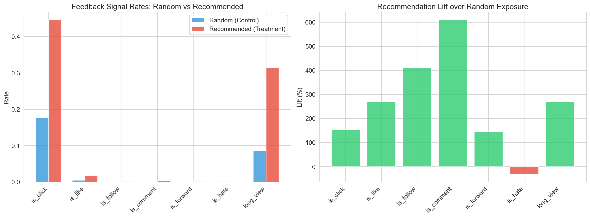
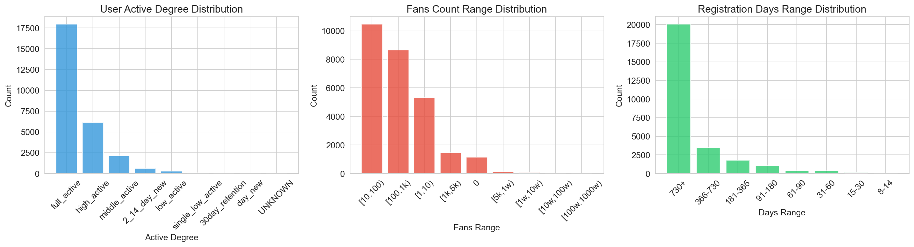
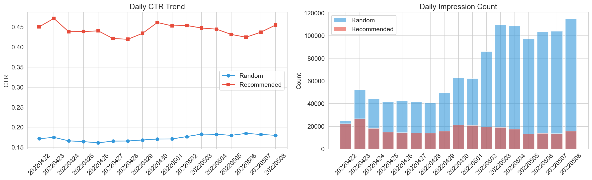
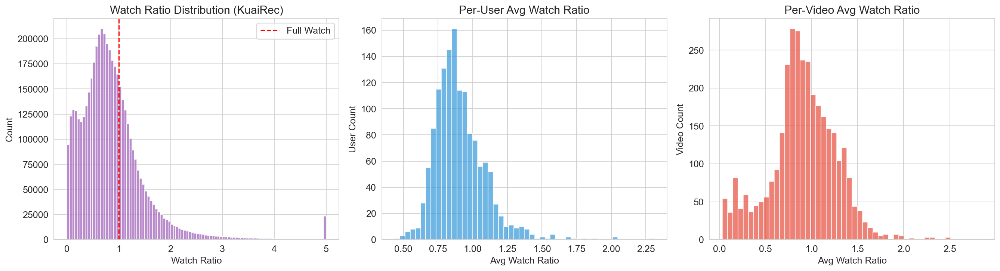
왜 이걸 하나요?
요리 전에 재료를 확인하는 것과 같습니다.
데이터에 빈 값은 없는지, 이상한 값은 없는지, 전체적인 패턴은 어떤지 먼저 봐야
나중에 분석이 엉뚱한 방향으로 가지 않습니다.
A/B 테스트란?
두 그룹을 만들어서 하나(A)에는 기존 방식, 다른 하나(B)에는 새 방식을 적용한 뒤 결과를 비교하는 실험.
신약 임상시험에서 진짜 약 vs 위약(플라시보)을 비교하는 것과 같은 원리입니다.
| 지표 | 랜덤 노출 | 추천 노출 | 변화 | 해석 |
|---|---|---|---|---|
| 클릭률(CTR) | 17.6% | 44.5% | +153% | 추천 영상을 2.5배 더 많이 클릭 |
| 좋아요 | 0.5% | 1.8% | +269% | 좋아요를 3.7배 더 많이 누름 |
| 팔로우 | 0.03% | 0.13% | +410% | 크리에이터 팔로우가 5배 증가 |
| 댓글 | 0.03% | 0.25% | +610% | 댓글 작성이 7배 증가 |
| 싫어요 | 0.11% | 0.08% | -32% | 싫어요는 오히려 감소 |
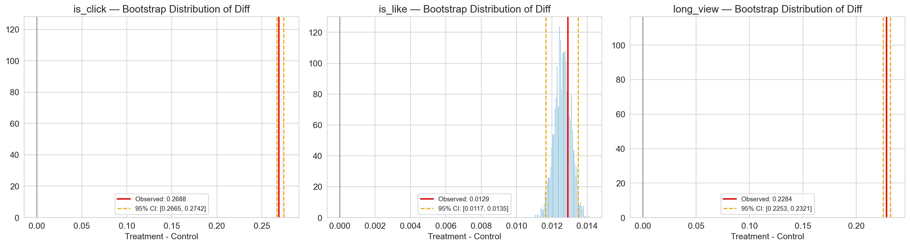
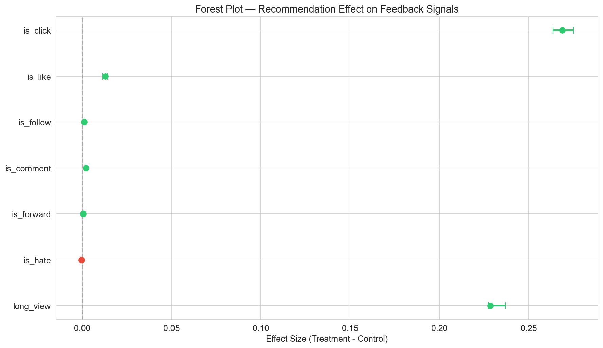
쉽게 설명하면:
동전을 10번 던져서 앞면이 7번 나왔다면, "이 동전이 특별한 건지" 아니면 "운이 좋았던 건지" 헷갈리죠.
하지만 10,000번 던져서 7,000번 앞면이 나왔다면? 이건 운이 아니라 진짜 뭔가 다른 것입니다.
p-value(피벨류)가 그 "운일 확률"인데, 이 분석에서는 p < 1e-300.
이건 "우연일 확률이 0.000…(0이 300개)…1%"라는 뜻.
즉, 100% 확실하게 추천이 효과가 있다고 볼 수 있습니다.
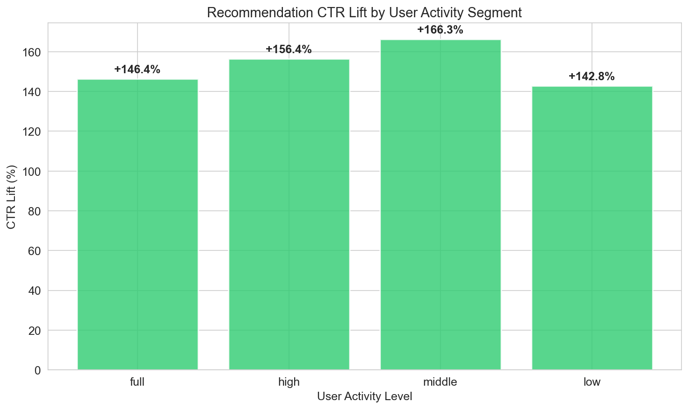
추가 확인 사항:
A/B 테스트에서 "추천 그룹이 더 좋다"는 걸 확인했지만, 한 가지 의문이 남습니다:
"혹시 추천을 많이 받는 유저가 원래 활동적인 사람들이라서 결과가 좋은 게 아닐까?"
이런 문제를 선택 편향(Selection Bias)이라고 합니다.
비유: 헬스장 회원이 비회원보다 건강하다고 해서 "헬스장이 건강하게 만든다"고 단정할 수 없죠.
원래 건강에 관심 있는 사람이 헬스장에 가는 것일 수 있으니까요.
추천을 받은 유저와 "비슷한 조건인데 추천을 안 받은 유저"를 1:1로 짝지어 비교합니다.
비유: 키, 몸무게, 나이, 운동 습관이 비슷한 두 사람 중 한 명만 헬스장에 보내고 결과를 비교.
이러면 "헬스장 효과"만 깔끔하게 뽑아낼 수 있습니다.
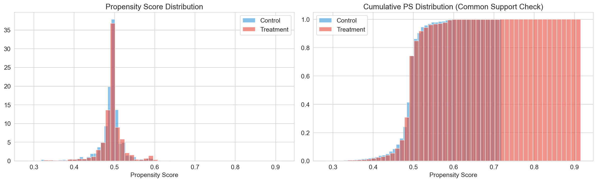
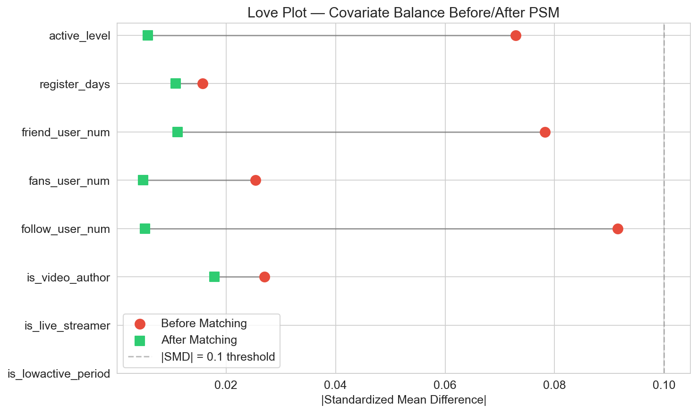
모든 유저에게 효과가 똑같을까? 아닙니다.
DR-Learner란?
단순히 모델 예측값으로만 효과를 추정하는 T-Learner와 달리,
실제 관측값으로 모델 오차를 보정하는 이중강건(Doubly Robust) 방식입니다.
"모델이 틀려도 실제 관측값이 보정해준다" → 더 정확한 개인별 효과 추정.
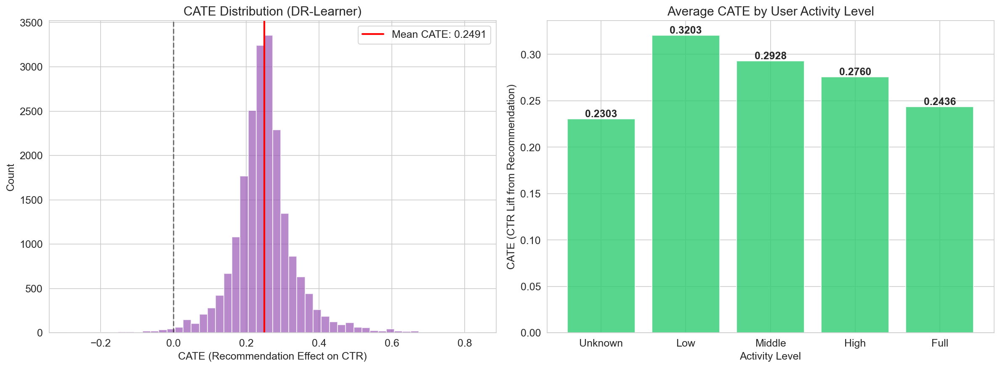
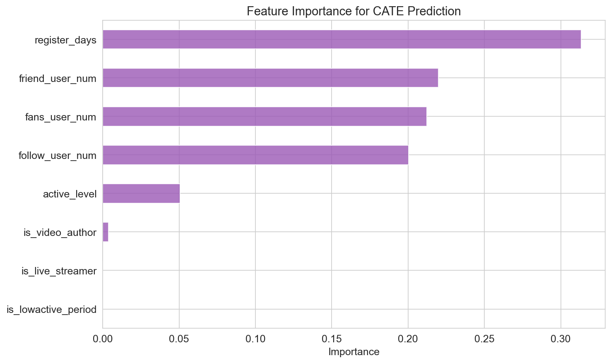
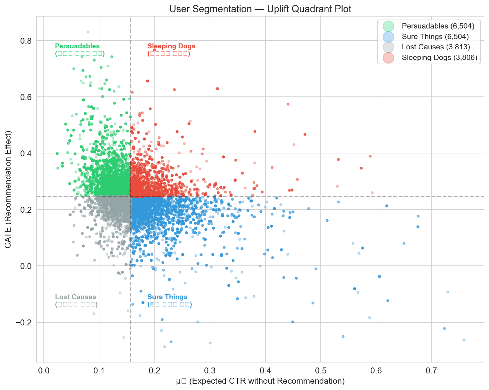
핵심 인사이트: 모든 유저에게 같은 강도로 추천하는 건 비효율적.
유저 타입에 따라 전략을 다르게 가져가야 합니다.
실제 서비스에 바로 적용하면 안 좋은 알고리즘일 때 유저가 이탈할 수 있고, A/B 테스트를 하려면 시간과 비용이 많이 듭니다.
그래서 이미 있는 데이터로 "미리 시뮬레이션"하는 기술이 필요합니다.
비유: 자동차를 실제 도로에서 테스트하기 전에, 시뮬레이터에서 먼저 돌려보는 것.
예시:
기존 로그: "유저 A가 조회수 기반 추천에서 영상 1, 2, 3을 봤음"
새 알고리즘에게 질문: "유저 A한테 뭘 추천할 거야?" → "영상 2, 4, 5 추천"
기존 로그에서 확인:
→ 새 알고리즘 예상 성능 = 추정값
| 방법 | 원리 (쉬운 설명) | 정확도 |
|---|---|---|
| DM | 유저 취향을 모델로 학습해서 예측 | 오차 0.2% (거의 완벽) |
| IPS | "이 영상이 보여질 확률"로 가중치를 줘서 보정 | 오차 92% (너무 부정확) |
| SNIPS | IPS의 가중치를 안정화시킨 개선 버전 | 오차 ~10% (실용적) |
| 알고리즘 | 설명 | 성능 (정답지 기준) |
|---|---|---|
| Random | 아무거나 보여줌 | 4.8% |
| Popular | 인기 영상만 보여줌 | 66.2% |
| UserCF | 나와 비슷한 유저가 본 걸 추천 | 79.1% |
| Blend | Popular + UserCF 혼합 | 83.4% (최고) |
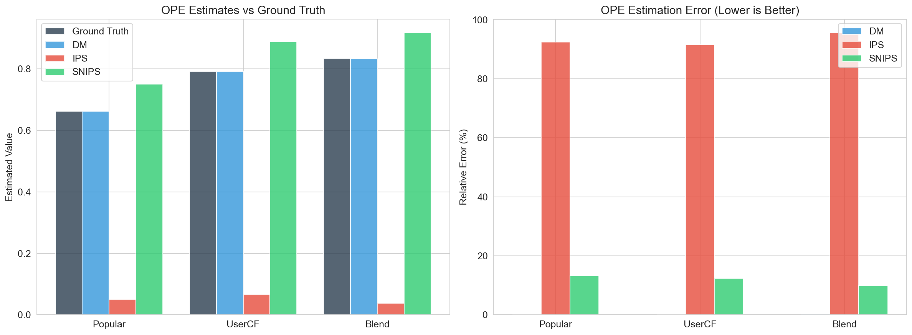
결론: 여러 방법을 섞은 Blend가 가장 좋고, DM 방법으로 이걸 미리 알 수 있었습니다.
실제 서비스 투입 전에 "이 알고리즘 쓸 만한가?"를 데이터로 검증할 수 있다는 뜻.
추천 알고리즘이 "내가 좋아할 만한 것"만 계속 보여주다 보면, 결국 비슷한 콘텐츠만 반복적으로 보게 되는 현상.
유튜브에서 고양이 영상 하나 봤더니 피드가 전부 고양이로 도배되는 경험, 해보셨죠?
같은 유저가 랜덤 추천을 받았을 때 vs 알고리즘 추천을 받았을 때 얼마나 다양한 영상을 보게 되는지 비교했습니다.
| 측정 방법 | 랜덤 | 추천 | 변화 | 의미 |
|---|---|---|---|---|
| Shannon Entropy (다양성 점수) |
5.147 | 4.723 | -8.2% | 보는 영상의 종류가 줄었음 |
| Gini Index (쏠림 정도) |
0.758 | 0.809 | +6.7% | 특정 영상에 더 쏠림 |
| 80% 커버리지 | 상위 75% 영상 | 상위 23% 영상 | 극단적 편중 | 소수 인기 영상만 추천됨 |
80% 커버리지가 뭐냐면:
"전체 시청의 80%를 채우려면 영상 몇 개가 필요한가?"라는 질문입니다.
• 랜덤: 전체 영상의 75%가 필요 → 다양하게 분산
• 추천: 전체 영상의 23%만으로 충분 → 소수 영상에 극단적으로 집중
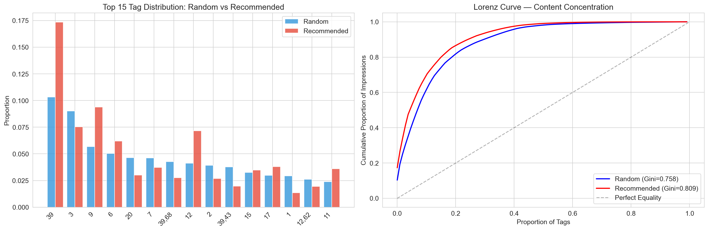
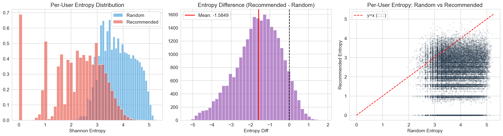
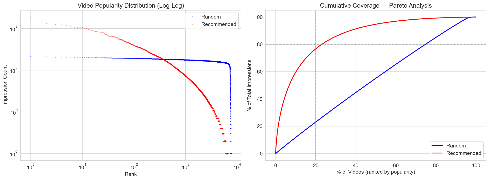
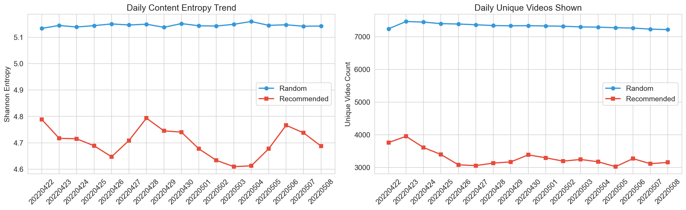
이건 "일부 유저"가 아니라 거의 모든 유저에게 일어나는 구조적 현상입니다.
비즈니스 지표를 끌어올리는 강력한 도구
장기적으로 유저 피로감, 이탈 위험
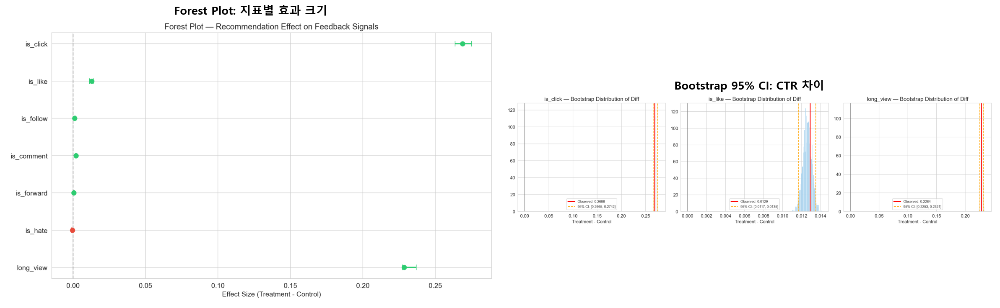
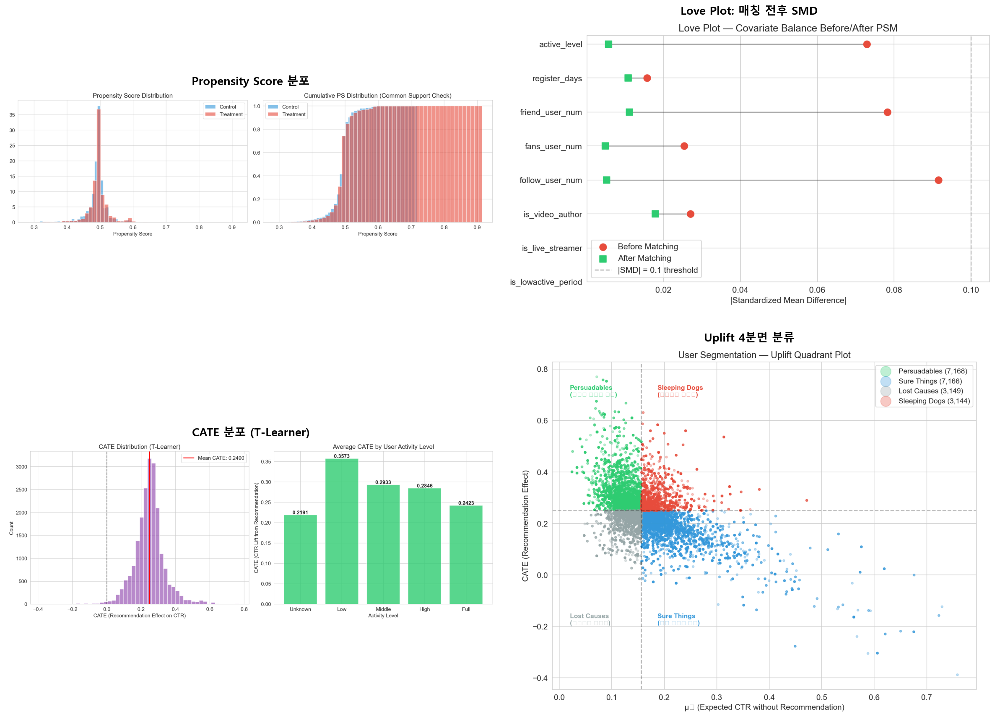
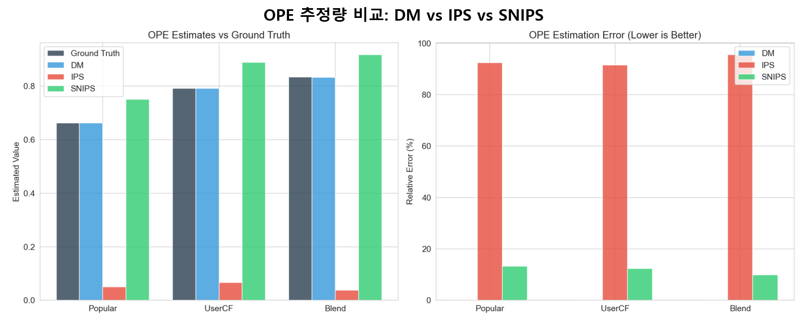
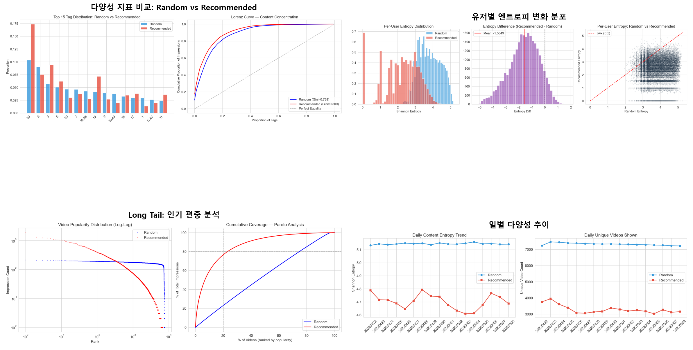
아까 유저를 4가지 타입으로 분류했죠? 이걸 실제 서비스에 활용합니다.
| 유저 타입 | 비율 | 전략 | 기대 효과 |
|---|---|---|---|
| Persuadables | 35% | 추천 강화 | 참여율 극대화 |
| Sure Things | 35% | 새로운 콘텐츠 소개 | 다양성 확보 |
| Lost Causes | 15% | 다른 카테고리 시도 | 이탈 방지 |
| Sleeping Dogs | 15% | 추천 빈도 감소 | 역효과 방지 |
모든 분석에는 한계가 있습니다. 이 프로젝트의 아쉬운 점을 솔직하게 정리합니다.
| 한계 | 내용 | 개선 방향 |
|---|---|---|
| 실험 설계 | 동일 유저가 랜덤/추천을 번갈아 경험 → 앞서 본 영상이 뒤 반응에 영향 가능 (순서 효과) | Clustered Standard Error, Mixed Effects Model 적용 |
| 단기 데이터 | 17일간 데이터 → 장기적 필터버블 심화 여부 불확실 | KuaiRand 전체 4개월 데이터 분석 |
| 태그 익명화 | 영상 카테고리가 숫자 ID만 제공 → "어떤 장르"가 집중되는지 해석 불가 | 실제 서비스 내부 데이터 활용 시 해결 가능 |
| SHAP 미적용 | Feature Importance는 변수의 방향(긍정/부정)을 알려주지 않음 | SHAP 값 추가로 방향까지 명확히 제시 |
| 플랫폼 특수성 | Kuaishou 숏폼 결과를 유튜브, 넷플릭스 등에 그대로 적용하기 어려움 | 다중 플랫폼 비교 연구 |
| OPE 샘플 | 200명 샘플로 OPE 수행 → 전체 유저 대비 대표성 한계 | 전체 유저 + Doubly Robust 추정량 추가 |
그럼에도 불구하고:
한계를 인식하면서도 공개 데이터만으로 EDA → A/B → 인과추론 → OPE → 필터버블까지
일관된 파이프라인을 구성했다는 점, 그리고 각 분석이 다음 분석의 근거가 되는
인과적 스토리라인을 갖췄다는 점에서 의미 있는 프로젝트입니다.
분석에서 등장하는 용어들을 일상 언어로 풀어놓았습니다.